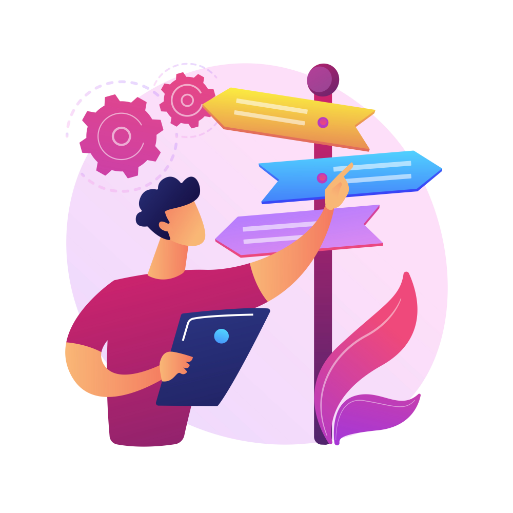

Proyecto uno
En construcción...


Avanzando hacia una administración digital por defecto, sin papel, basada en los principios europeos de Once Only y Digital by Default, garantizando seguridad jurídica, interoperabilidad y una experiencia de usuario coherente tanto para la ciudadanía como para el personal interno.

En construcción...